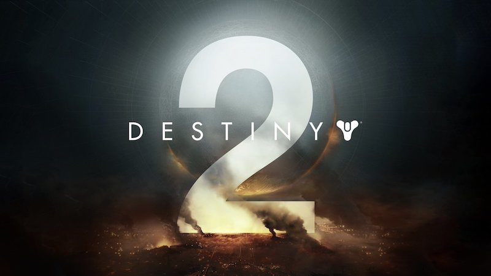
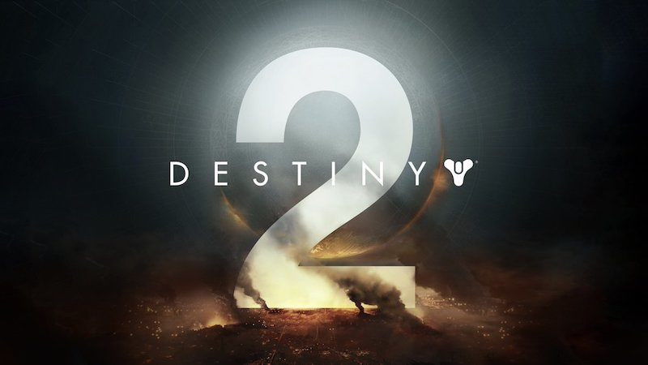

Honorable Mention 1:
Cryptic Studios - Star Trek Online
The massively multiplayer online roleplaying game that is Star Trek Online gets an honorable mention, the game world is based after the existing star trek series' (TOS) The original series with Captain Kirk, (TNG) The Next Generation with Captain Picard (DS9) Deep Space 9 with Commqnder/Captain Sisko and (STVOY) Star Trek Voyager with Captain Janeway, the players charcter exists in the 25th century, about 30 yesar after the Star Trek Nemesis movie. The game has changed over the years with an updated introduction tutorial for new players, there is a lot to choose from when creating a character with most of the well known races available to play, though depending on which faction is chosen a large or small number of races are restricted five factions (Federation, Klingon Empire, Romulan Republic, Federation 23rd Century and the newest faction the Dominion) unless you pay to unlock them, example: Klingons can only be played as part of the Klingon empire but can be unlock for the federation faction. Though the players chosen race and gender is permenant they can still customize their characters body shape, skin, hair, etc, as well as their uniform, even the ships can be customized to a certain degree and as the player progresses through the game they will earn more powerful ships. The story revolves around many of the events of the past series' with the game seemingly continuing to follow on where they left off and giving closure through missions to some of the mysteries that were never fully explained throughout the games story. I like this game for the customization and the attention paid to all the content that connect back to the shows i enjoyed watching, the gameplay is enjoyable though not necessarily for everyone, the game revolves mostly around the story missions so there isnt a lot in the way of exploration and although you can do well without paying for any content, a growing number of new design ships have been added for players to purchase using real world money, this is one of the downsides with the other being the games current state, though some issues have been fixed there are one or two bugs here and there that can make the game difficult to play.
Honorable Mention 2:
Ghostbusters: The Video Game
Based on the orignal movies 'Ghostbusters' and 'Ghostbusters 2' the game does a very good job of making players feel like they are in the movies, the original actors all play their parts with the player taking on the role of a new recruit often referred to as 'the rookie', played from a third person view. The story is fun and enjoyable as you visit places from the first movie and new places in search of paranormal activity that leads the Ghostbusters into uncovering a plot to transform and take over the world. The game itself feels like what the third movie could have been like if they had ever made one. Over the course of the game the player gets to upgrde their proton pack, starting off with the standard
red
energy proton beam as well as three new modes in the forms of the Shock Blast (blue
energy shotgun style upgrade), Slime Blower (Spraysgreen
instead of pink slime a lot like in Ghosbusters 2) and the Meson Collider (yellow
energy rapid fire upgrade), each with secondary fire abilities. The player also uses their EKG meter to track down ghosts and take scans of them and items affected by paranormal activity, adding them to an archive they can review. This game was a lot of fun to ply by myself but even more fun with my friends, the only downside being that the developer shut down the co-op play. 
